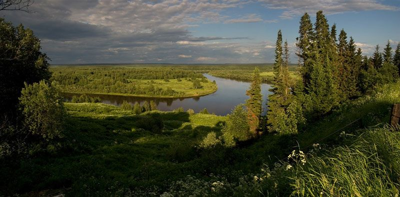
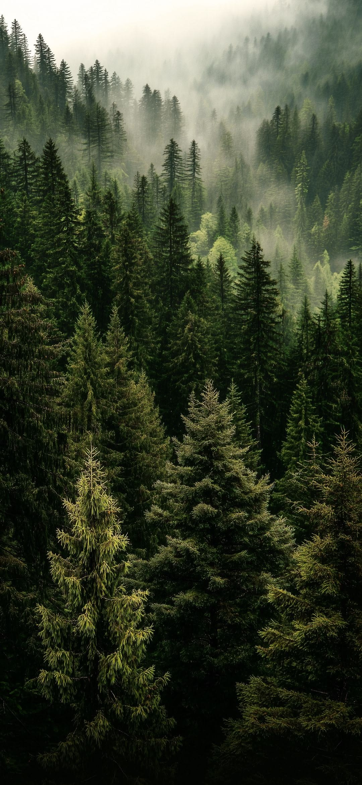
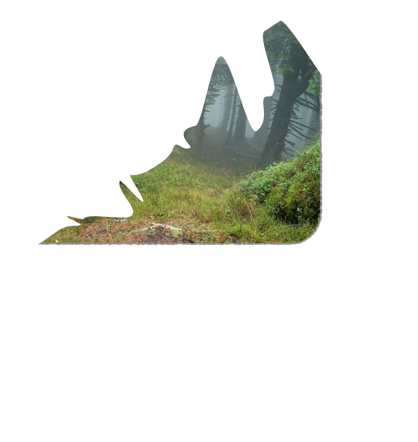
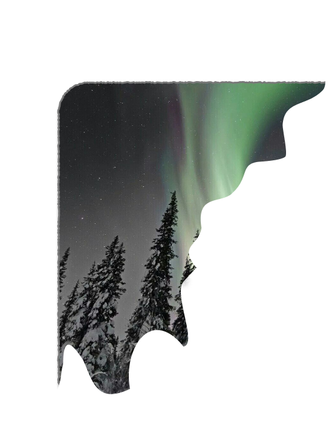
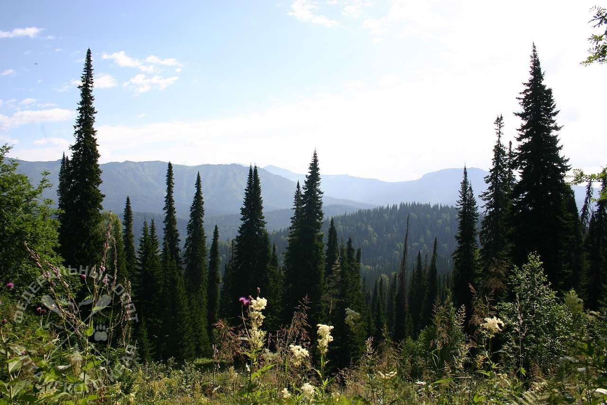
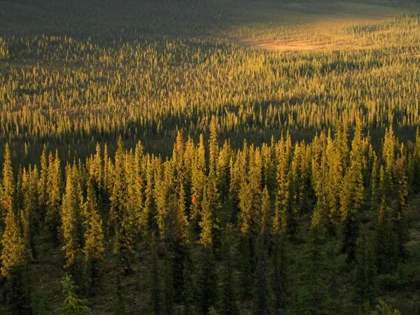

Start your journey with Boreal
| Earth's last great green frontier.


| Earth's last great green frontier.
|Earth’s largest living forest.
It is larger than the entire Amazon and covers an area comparable to that of the United States or all of South America.
PS: Bigger than the Amazon, wilder than you imagine — Siberia's taiga is Earth's last great green frontier. Come see it before you just read about it.


|The world's biggest air filter.
This is not just a forest — it is the “green lungs” of the Northern Hemisphere. The taiga stores a gigantic amount of carbon and actually affects the climate of the entire Earth.
The North's green lungs — storing more carbon than any forest on Earth. What happens here changes the climate everywhere.
|Driving through the wild.

You can drive or take the train for thousands of kilometers and hardly ever leave the forest. This is one of the last truly wild regions on the planet.

|Where winter’s freeze meets summer’s fire.

In winter, the temperature in some areas of Eastern Siberia regularly drops below –50 °C. At the same time, in summer the air can warm up to +30…+35 °C. It’s a contrast that you can hardly experience anywhere else.

|A recent green explosion.
The taiga is a relatively young biome. Just 12–15 thousand years ago, most of it was under a glacier. What you see now is the result of a relatively recent “green explosion.”


|Where the grass grows up to 4.5 meters.
Cherny taiga (Altai, Kuznetsk Alatau, Salair) is a true “Siberian jungle.” The grasses here grow to 2–4.5 meters and completely conceal a rider on horseback. Shrubs (rowan, bird cherry, willow) reach 15–18 meters in height and have trunks 30 cm thick. This is one of the most mysterious phenomena of the world’s boreal forests.

|Trees, mosses, and the sacred cedars.
Mosses & Lichens: They cover up to a third of the taiga floor and are the main winter food for many animals.
.webp)
The Dahurian Larch: A deciduous coniferous tree. Sheds its needles in winter to survive extreme frosts, forming vast expanses of Eastern Siberia.

Siberian Cedar: A sacred pine with highly valued superfood nuts.
.webp)
“In every walk with nature, one receives far more than he seeks.”— John Muir
.webp)
|From the silent freeze of the grouse to the fangs of the musk deer, from the ancient fur of the sable to the roar of the Siberian tiger — every creature here carries a mystery. Welcome to the kingdom of the last great northern forest.
The sable is a symbol of the Siberian taiga. Its fur is still considered one of the best in the world. It was for the sake of the sable that Siberia was once explored.

The musk deer is the most unusual ungulate in Siberia. Males have long, saber‑like tusks (up to 10 cm), and they have no horns at all. Musk deer musk is one of the most expensive and ancient fragrances in the history of perfumery.

.webp)
The Siberian tiger is the largest tiger on Earth. It lives at the very edge of the taiga in the Far East and is able to withstand frosts down to –50 °C

The Siberian grouse is a rare taiga bird, an endemic species of Russia. It is almost not afraid of humans. It uses a “freeze” strategy: it simply freezes and allows you to get very close.

The wolverine is a true “ruler” of the taiga. Despite its small size, it is capable of driving wolves and even brown bears away from its prey.

|The taiga covers approximately 17% of the Earth's land surface.
“The forest is the lungs of our land, purifying the air and giving fresh strength to our people.”— Franklin D. Roosevelt

|The last great untouched wilderness on Earth.


Some areas of the East Siberian taiga are still virtually untouched by humans — these are among the largest continuous expanses of wild nature on the planet.


Brown bear, moose, lynx, and wolverine: all in one place.
In the Siberian taiga, you can encounter the brown bear, the moose, the lynx, and the wolverine — all in the very same forest.



"The journey through the taiga ends here. But the real adventure begins when you step into the forest. Write to us, and we'll guide you to the edge of the wild."
Swipe